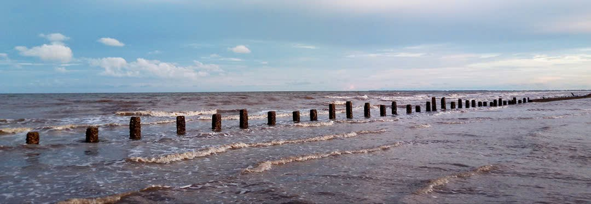
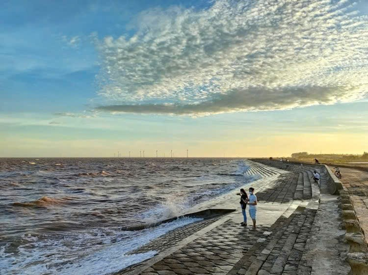
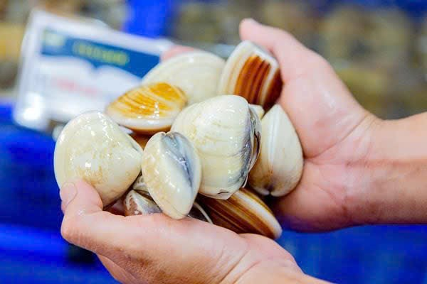
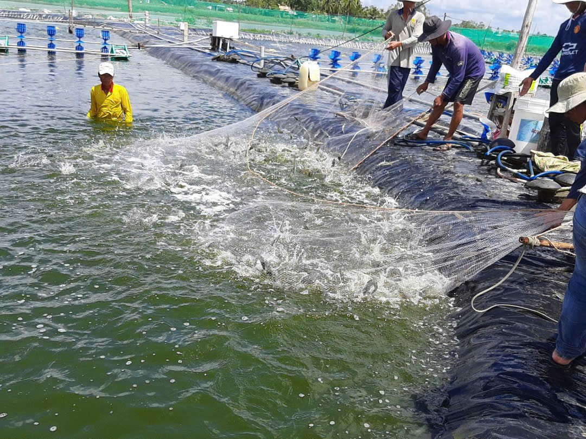

Địa hình:
- Chủ yếu là đất phù sa ven sông, thích hợp cho việc trồng trọt và nuôi trồng thủy sản.
- Bãi bồi ven biển mở rộng tự nhiên nhờ sự bồi tụ của các dòng sông.


Kinh tế:
- Nông nghiệp và nuôi trồng thủy sản (tôm, cá, nghêu) là ngành kinh tế chính.
- Đây cũng là một địa điểm phát triển du lịch sinh thái nhờ khung cảnh thiên nhiên hoang sơ.


Khí hậu:
- Thuộc vùng khí hậu nhiệt đới gió mùa, nóng ẩm quanh năm.
- Có hai mùa rõ rệt: mùa mưa (tháng 5 - tháng 11) và mùa khô (tháng 12 - tháng 4 năm sau).